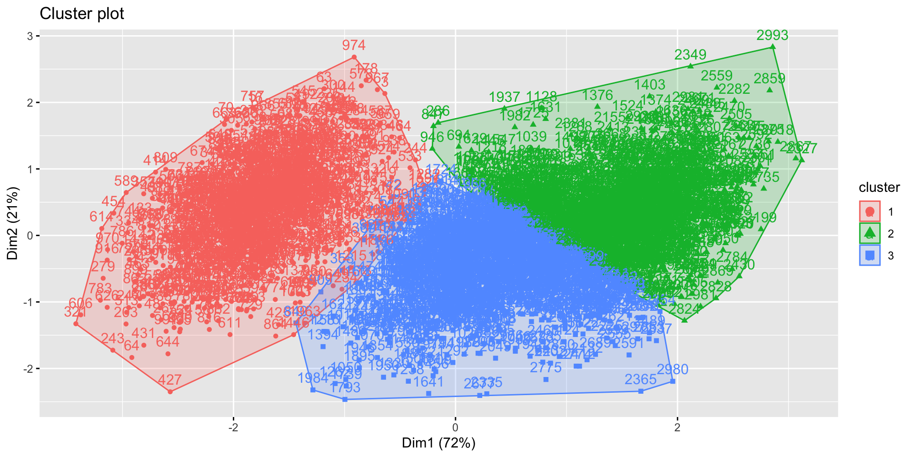
Clustering in Finance
A primer on partitional and hierarchical clustering algorithms, with applications to financial datasets
Barry Quinn
Digital Dave
Digital Dave
2024-03-12
Packages used
library(tidyverse)
library(fpc)
library(factoextra)
library(fungible)
library(ggdendro)Introduction
- Many problems in finance require the clustering of variables or observations:
- Factor investing, relative value analysis (e.g., forming quality minus junk portfolios)
- Risk management, portfolio construction (e.g., deriving the efficient frontier)
- Dimensionality reduction (e.g., decomposing bond return drivers)
- Modelling of multicollinear systems (e.g., computing p-values)
- Despite its usefulness, clustering is almost never taught in Econometrics courses
- None of the major Econometrics textbooks, and only a handful of academic journal articles, discuss the clustering of financial datasets
Learning outcomes
- Partitional clustering
- Hierarchical clustering
- Understand that different features and/or similarity metrics will lead to different clusterings
- Understand it is key to formulate the problem in a way that results have economic meaning and interpretability
What is Clustering?
- A clustering problem consists of a set of objects and a set of features associated with those objects.
- The goal is to separate the objects into groups (called clusters) using the features, where intragroup similarities are maximized, and intergroup similarities are minimized.
- It is a form of unsupervised learning, because we do not provide examples to assist the algorithm in solving this task.
- Clustering problems appear naturally in finance, at every step of the investment process.
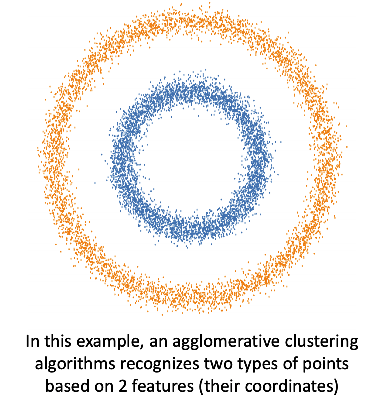
Why cluster in finance?
- Quantitative analysts may look for historical analogues to current events, a task that involves developing a numerical taxonomy of events.
- Portfolio managers often cluster securities with respect to a variety of features, to derive relative values among peers.
- Risk managers are keen to avoid the concentration of risks in securities that share common traits.
- Traders wish to understand flows affecting a set of securities, to determine whether a rally or sell-off is idiosyncratic to a particular security, or affects a category shared by a multiplicity of securities.
In tackling these problems, we use the notions of distance we studied in previous weeks
Proximity matrix
- Consider a data matrix , of order , where is the number of objects and is the number of features.
- We use the features to compute the proximity between the N objects, as represented by an matrix.
- The proximity measure can indicate either similarity (e.g., correlation, mutual information) or dissimilarity (e.g., a distance metric).
- It is convenient but not strictly necessary that dissimilarity measures satisfy the conditions of a metric: nonnegativity, symmetry and triangle inequality
- The proximity matrix can be represented as an undirected graph where the weights are a function of the similarity (the more similar, the greater the weight) or dissimilarity (the more dissimilar, the smaller the weight).
- Then the clustering problem is equivalent to breaking the graph into connected components (disjoint connected subgraphs), one for each cluster.
- When forming the proximity matrix, it is a good idea to standardize the input data, to prevent that one feature’s scale dominates over the rest.
Cluster FIFA 20 players
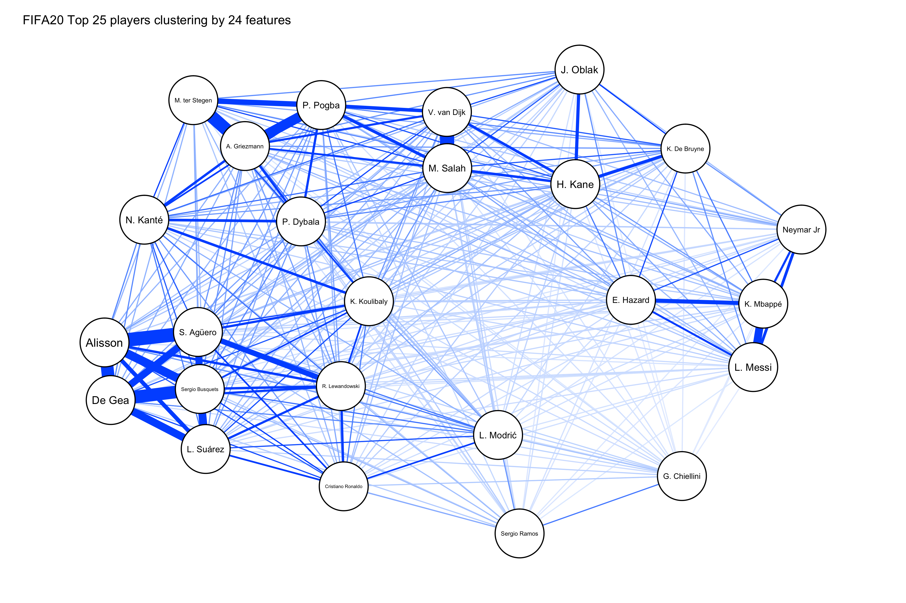Clustering algorithms
There are two main classes of clustering algorithms: partitional and hierarchical
- Partitional techniques create a one-level (un-nested) partitioning of the objects (each object belongs to one cluster, and to one cluster only) simultaneously.
- Hierarchical techniques produce a nested sequence of partitions, with a single, all-inclusive cluster at the top and singleton clusters of individual points at the bottom. Hierarchical clustering algorithms can be divisive (top-down) or agglomerative (bottom-up).
A partitional algorithm: K-means
- K-Means is a vector quantization model.
### Statistical thinking {{< fa brain >}} It attempts to split the samples (rows) of into a predetermined number of clusters .
### Algorithmic thinking {{< fa brain >}} {{< fa plus >}} {{< fa brain >}} - Step 1: Initialize a random set of K centroids - Step 2: Assign each sample to one cluster such that the within-cluster variance is minimised - Step 3: Update K centroids based on the clusters from Step 2 - Step 4: Repeat steps 2 and 3 until convergence]
A partitional algorithm: K-mean
Experiment set up
- The
fungible::monte()simulates a set of clusters which have some proportion of total variance is due to their mixture. - This is typical of a financial data set, where the common market component will affect all clusters.
Clustering results
- The algorithm took 4 before finding a solution
A few considerations
- K-Means assumes that the clusters are convex, isotropic, and with similar variance
- Features should be standardized prior to clustering
- Other algorithms may perform better when clusters are elongated or irregular
- Within-cluster variance is not a normalized metric
- Curse of dimensionality: When has many columns, variances are inflated, and outcomes may be biased.
- One solution is to apply a dimensionality reduction technique (e.g., PCA) prior to clustering
- K-Means will always converge, however the outcome may be a local minimum
- One solution is to run multiple instances in parallel, with different seed centroid
A Hierarchical Algorithm: Agglomerative Clustering
### Algorithmic thinking {{
Dendrogram
- A dendrogram is a tree graph that displays the hierarchical composition of the clusters
- The y-axis indicates the distance between the two objects that form a new cluster
- A linkage matrix characterizes a dendrogram
- For N items, a linkage matrix has N-1 rows (one row per cluster)
- Three columns:
- Integer identifying object 1
- Integer identifying object 2
- Distance between objects 1 and 2 (based on linkage criterion)
- pretty dendrograms =
ggdendropackage
A few considerations {{}}
- Hierarchical algorithms can handle clusters that are non-convex, anisotropic, with unequal variance
- This includes clusters within clusters
- Hierarchical algorithms allow connectivity constraints
- Connectivity constraints cluster together only adjacent points. This links together points even if the centroid is not part of the cluster
- However, hierarchical algorithms may not handle properly elongated blobs
- One solution is to orthogonalize the features (e.g., PCA without dimensionality reduction) prior to clustering
- The appropriate linkage method can be chosen via cross-validation, or cophenetic correlation
Example of hierarchical clustering
Simulate three clusters
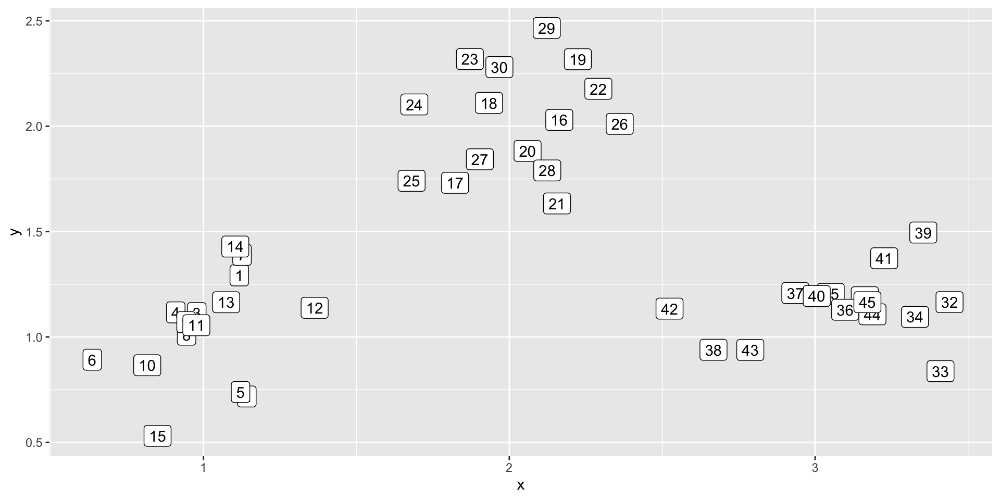
The above code using a base R approach to clustering. Two features are drawn from a normal distribution, creating three clusters with some noise. The observations are each labelled from 1 to 45
hierarchical agglomerate clustering
the function hclust() takes a distance matrix dist (default is euclidean distance) from the tibble dat and then derives a linkage matrix using a single-linkage criterion.
- Initially, each observation is assigned to its own cluster and then the algorithm proceeds iteratively, at each stage joining the two most similar clusters, continuing until there is just a single cluster. At each stage distances between clusters are recomputed by the Lance–Williams dissimilarity update formula according to the particular clustering method being used.
?hclust()for more details
Dendrogram output
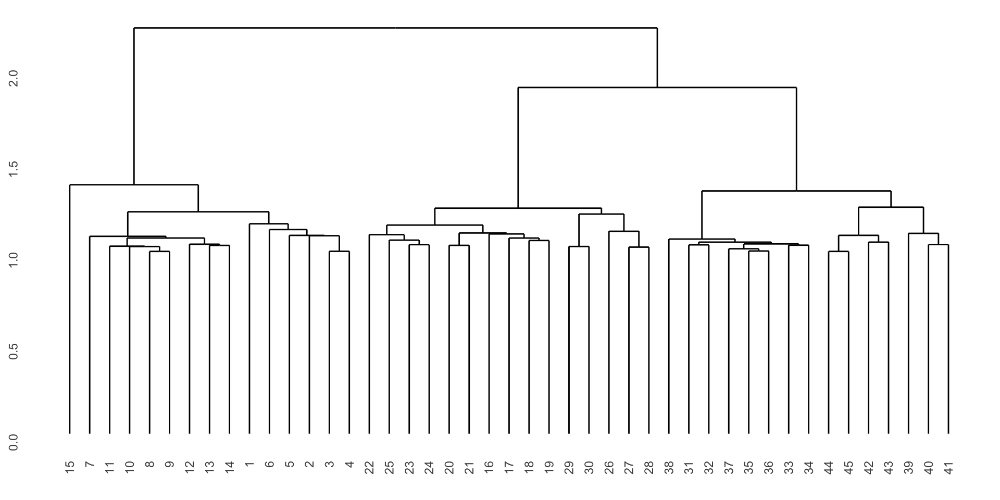
- By restricting the growth of a hierarchical tree, we can derive a partitional clustering from any hierarchical clustering. - However, one cannot generally derive a hierarchical clustering from a partitional one.
Types of clustering
- Depending on the definition of cluster, we can distinguish several types of clustering algorithms, including the following:
- Connectivity: This clustering is based on distance connectivity, like hierarchical clustering. Finance example = @Prado2016.
- Centroids: These algorithms perform a vector quantization, like k-means, Finance example = @Prado2018.
- Distribution: Clusters are formed using statistical distributions
- Density: These algorithms search for connected dense regions in the data space. Examples include DBSCAN and OPTICS.
- Subspace: Clusters are modeled on two dimensions, features and observations. An example is biclustering/coclustering. For instance, they can help identify similarities in subsets of instruments and time periods
Cluster algorithm inputs
- Some algorithms expect as input a measure of similarity, and other algorithms expect as input a measure of dissimilarity.
- It is important to make sure that you pass the right input to a particular algorithm.
- For instance, a hierarchical clustering algorithm typically expects distance as an input, and it will cluster together items within a neighborhood.
- Centroids, distribution and density methods expect vector-space coordinates, and they can handle distances directly.
- However, biclustering directly on the distance matrix will cluster together the most distant elements (the opposite of what say k-means would do). One solution is to bicluster on the reciprocal of distance.
Curse of dimensionality
- If the number of features greatly exceeds the number of observations, the curse of dimensionality can make the clustering problematic: most of the space spanning the observations will be empty, making it difficult to identify any groupings. - One solution is to project the data matrix X onto a low-dimensional space, similar to how PCA reduces the number of features (Steinbach, 2004, Ding, 2004). - An alternative solution is to project the proximity matrix onto a low-dimensional space, and use it as a new X matrix. - In both cases, denoising and detoning can help identify the number of dimensions associated with signal.
Number of clusters
- Partitioning algorithms find the composition of unnested clusters, where the researcher is responsible for providing the correct number of clusters.
- In practice, researchers often do not know in advance what the number of clusters should be.
- The “elbow method” is a popular technique that stops adding clusters when the marginal percentage of variance explained does not exceed a predefined threshold.
- In this context, the percentage of variance explained is defined as the ratio of the between-group variance to the total variance (an F-test).
- One caveat of this approach is that the threshold is often set arbitrarily. (Goutte et al. 1999).
Optimal Number of Clusters (ONC)
Lopez de Prado (2020) presents the .heat[ONC] algorithm, which recovers the number of clusters from a shuffled block-diagonal correlation matrix.
ONC belongs to the broader class of algorithms that apply the silhouette method.
Although we typically focus on finding the number of clusters within a correlation matrix, this algorithm can be applied to any generic observation matrix.
Cluster scoring
- In order to determine the optimal number of clusters, we first need to define a function that scores the output of a scoring algorithm
- In general, there are two types of clustering scoring functions:
- External: those that require ground-truth labels
- Internal: those that don’t require it
- Because clustering is an unsupervised learning problem, internal scores are more natural. Three of the most used internal scoring functions are:
- Calinski-Harabasz index (or variance ratio) direct method
- Gap statistics Statistical method
- Silhouette scores direct method
How many blobs are there?

- On 2-D, this is an easy question for a human.
- On higher dimensions, machines are more likely to win
Calinski-Harabasz index (or variance ratio)
- The Calinski-Harabasz index of a clustering is the ratio of the between-cluster variance (which is essentially the variance of all the cluster centroids from the dataset’s grand centroid) to the total within-cluster variance (basically, the average WSS of the clusters in the clustering).
- For a given dataset, the total sum of squares (TSS) is the squared distance of all the data points from the dataset’s centroid.
- The TSS is independent of the clustering.
- If WSS(k) is the total WSS of a clustering with k clusters, then the between sum of squares BSS(k) of the clustering is given by BSS(k) = TSS - WSS(k).
- WSS(k) measures how close the points in a cluster are to each other.
Calinski-Harabasz index (or variance ratio)
- BSS(k) measures how far apart the clusters are from each other.
- A good clustering has a small WSS(k) and a large BSS(k).
- The within-cluster variance W is given by WSS(k)/(n-k), where n is the number of points in the dataset.
- The between-cluster variance B is given by BSS(k)/(k-1).
- The within-cluster variance will decrease as k increases; the rate of decrease should slow down past the optimal k.
- The between-cluster variance will increase as k, but the rate of increase should slow down past the optimal k.
- So in theory, the ratio of B to W should be maximized at the optimal k.
Gap statistic
Important
The gap statistic is an attempt to automate the “elbow finding” on the WSS curve. It works best when thedata comes from a mix of populations that all have approximately Gaussian distributions (a mixture of Gaussian). - @Tibshirani2001
Silhouette
Silhouette scores are defined for each sample as:
- where
- mean distance between object n and other objects in its cluster
- mean distance between object n and objects in the nearest cluster
####Advantages: * The scores are bounded [-1,1] * Because we have one score per sample, we can reallocate specific objects to better clusters * Clusters with average are overlapping, and could be merged * We can use to derive a distribution of scores, and make inference (p-values). For example, we can compute the t-value,
Example of cluster scoring
Elbow method
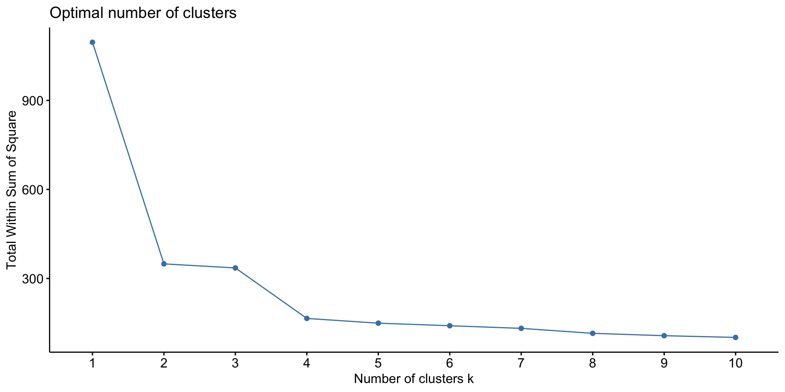Gap statistic
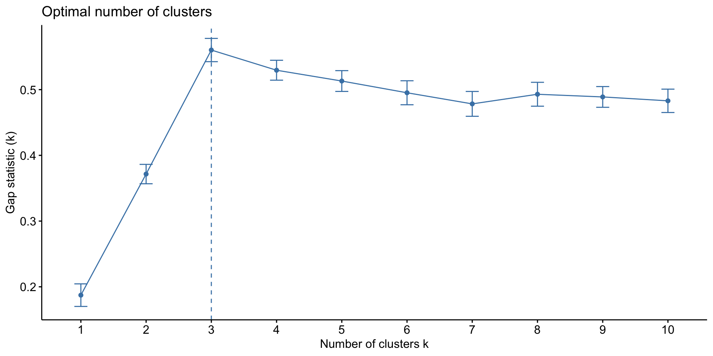Silhouette
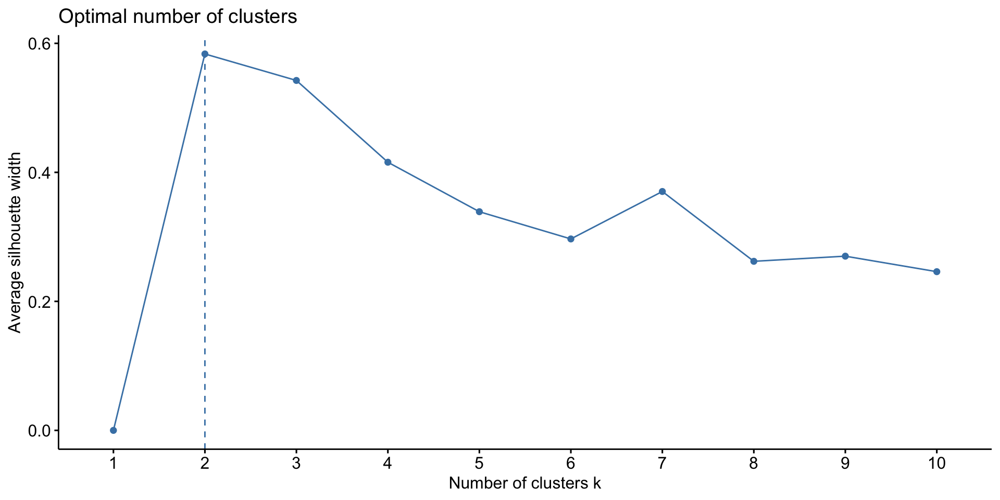Inference
- Interestingly, both the gap-statistic and the elbow method (which uses the denominator of the CHI) suggest a optimal cluster number of 3, while the silhouette method suggests 2.
- 2 is not an unreasonable choice as there was some overlap in the three clusters three features sample
Use case: Factor Investing/Relative Value Strategies
- Factor investing attempts to price assets that share some common characteristics
- Traditionally, economists group assets according to a single characteristic
- E.g.: value, size, momentum, quality, liquidity, carry, etc.
- This misses known interaction effects, such as value vs. momentum, and hierarchical dependencies
- A natural solution is to cluster assets on multiple characteristics (features), and let the algorithm find the optimal number of clusters
- We can then evaluate the performance of each cluster, and assess whether the risk-premium is statistically significant
- This approach is also useful for relative value strategies
Exam type questions
Clustering UK asset pricing factors
- Source
- Load the UK asset pricing factors from the UK data service
- The dataset contains 5 factors: market, size, value, momentum, and liquidity
Rows: 7,389
Columns: 7
$ date <date> 1988-10-03, 1988-10-04, 1988-10-05, 1988-10-06, 1988-10-07, 1988…
$ rm <dbl> -0.0108511, 0.0021296, 0.0103932, 0.0063450, 0.0036179, 0.0001750…
$ rf <dbl> 0.0004220, 0.0004233, 0.0004251, 0.0004254, 0.0004254, 0.0004223,…
$ rmrf <dbl> -0.01127306, 0.00170627, 0.00996818, 0.00591960, 0.00319251, -0.0…
$ smb <dbl> 0.00525148, -0.00085576, -0.00446347, -0.00249881, 0.00030991, 0.…
$ hml <dbl> 0.00068780, -0.00139754, 0.00140606, 0.00250139, -0.00277563, -0.…
$ umd <dbl> -0.00508378, 0.00121570, -0.00373774, -0.00266541, 0.00224610, 0.…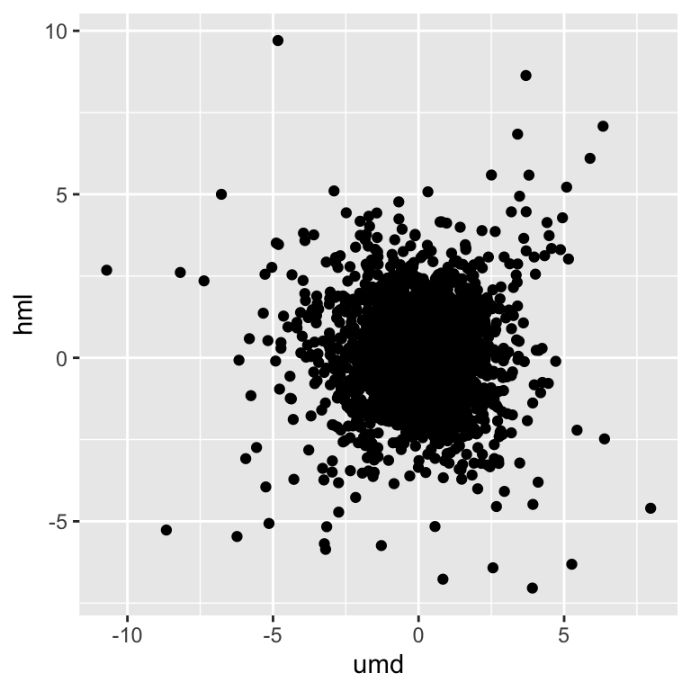
Exam type questions
ONC using silhoutte method
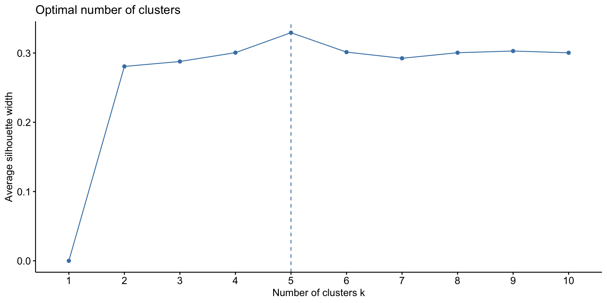Exam type questions
kmean clustering results
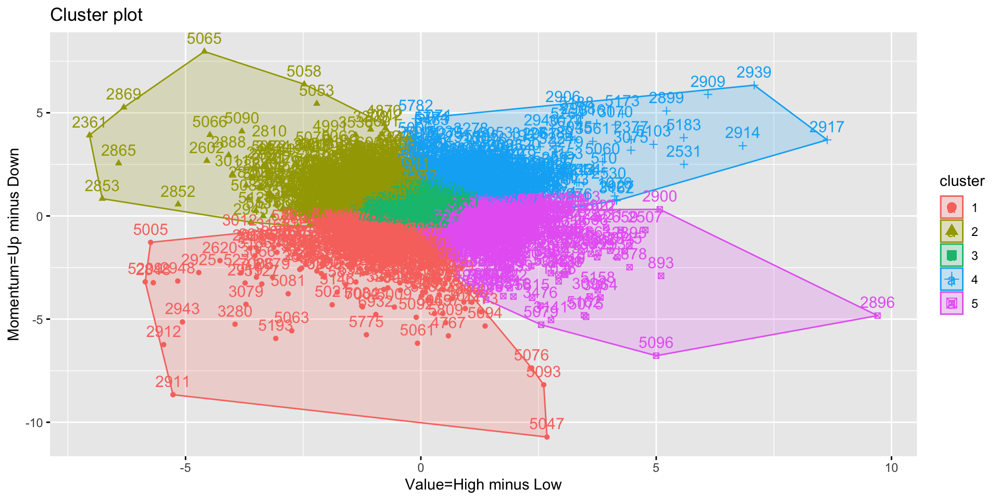Exam type questions
Inference
- Unlike the traditional econometric interpretation the clustering has found a fifth cluster.
- The two asset pricing risk factors each have two components so finding at least four clusters is not surprising
- This fifth cluster is a combination of the four components that make up the other factors.
- To set an relative value strategy, the quantitative analyst could design an algorithm to identity this cluster and assess whether their is significant risk premium in investment.
Input to clustering: Observations matrix
- In FML it is not advising to simple pass the raw observation matrix to a cluster algorithm.
- Some treated version of the raw data is used as the input (For example the information-theoretic treats in the last lecture)
- Most finance problems involve a correlation matrix which we will focus on.
- Assume that we .bold[observe] N variables that follow a multivariate Normal distribution characterized by a correlation matrix where is the correlation between variables i and j.
- If a strong common component is present, it is advisable to remove it by applying the detoning, because a factor exposure shared by all variables may hide the existence of partly shared exposures.
Correlation clustering
- Correlation clustering can follow three approaches
- Circumvent the matrix, by directly defining the distance metrics as or from last lecture.
- Use the correlation matrix as
- Derive the matrix or a similar transformation (the distance of distances approach).
- The advantage of options 2 and 3 is that the distance between two variables will be a function of multiple correlation estimates, and not only one, which makes the analysis more robust to the presence of outliers.
- A further advantage of 3 is that it acknowledges that a change from correlation from 0.9 to 1.0 is greater than a change from 0.1 to 0:2.
- @Lopez2020 recommends approach 3
Distance of distances clustering algorithm
The clustering of correlation matrices is peculiar in the sense that the features match the observations: we try to group observations where the observations themselves are the features (hence the symmetry of X).
Matrix X appears to be a distance matrix, but it is not. It is still an observations matrix, on which distances can be evaluated.
For large matrices X, generally it is good practice to reduce its dimension via PCA.
The idea is to replace X with its standardized orthogonal projection onto a lower-dimensional space, where the number of dimensions is given by the number of eigenvalues in X’s correlation matrix that exceed
Useful resources
References